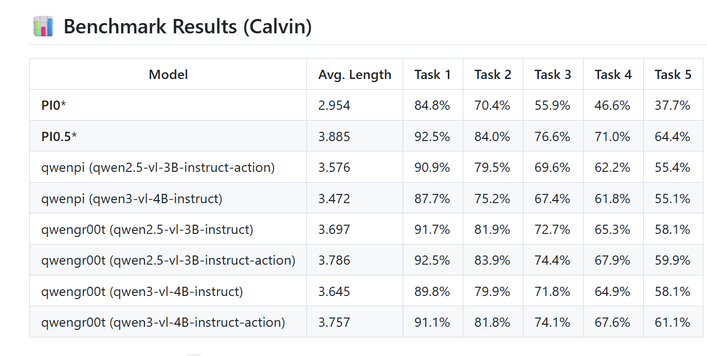

A progressive framework for bridging 3D perception, temporal memory, and physically grounded action generation in embodied AI.

We identify three key bottlenecks in current VLA systems: missing 3D geometric priors, missing temporal memory, and weak grounding from semantic reasoning to physical action. To address them, we propose a three-layer framework based on spatiotemporal memory, a spatially enhanced VLM backbone (RynnBrain-8B), and 3D-grounded training data.
Inject explicit memory into the visual encoder so the model retains object trajectories, tracks interaction history, and reasons over long-horizon tasks. We expose memory length and memory sampling interval as tunable knobs.
Replace the generic VLM base with RynnBrain-8B, a stronger spatial foundation model that improves geometric understanding and coordinate-sensitive reasoning.
Integrate depth or point-based information into training so the model learns to align semantics with physically meaningful coordinates.
Implemented on StarVLA for clean backbone replacement, modular integration, and controlled ablation on embodied benchmarks (LIBERO, CALVIN).
| Setting | Batch | Steps | Base Model | Added Module | Object | Spatial | Goal | Long |
|---|---|---|---|---|---|---|---|---|
| Official | — | 50k | starVLA-Qwen3VL-4B | None | 99.6 | — | 99.0 | 98.6 |
| Reproduced | — | 50k | starVLA-Qwen3VL-4B | None | 99.6 | 93.2 | 98.6 | 93.0 |
| + ShortTermMemory (interval 5) | 16 | 20k | starVLA-Qwen3VL-4B | Memory len 5 | 99.6 | 94.2 | 98.2 | 95.8 |
| + ShortTermMemory (interval 10) [ours] | 16 | 20k | starVLA-Qwen3VL-4B | Memory len 5 | 99.8 | 94.4 | 96.4 | 96.0 |
Success rate (%) on the four LIBERO suites under a single 4-in-1 co-training run. Adding short-term memory with sampling interval 10 yields the best overall results, improving Long-horizon by +3.0 and Spatial by +1.2 over the no-memory baseline.
| Method | Note | LIBERO-Spatial | LIBERO-Object | LIBERO-Goal | LIBERO-10 |
|---|---|---|---|---|---|
| Qwen2.5-VL-GR00T-LIBERO-4in1 | local reproduction | 98.4 | 99.0 | 96.2 | 91.0 |
| 0413_libero4in1_RynnBrain8OFT | step 60k | 94.4 | 100.0 | 98.0 | 95.8 |
| 0420_libero4in1_RynnBrain8OFT_memory [ours] | step 60k | 95.4 | 99.6 | 97.2 | 93.8 |
Adding the memory module on top of the RynnBrain-8B-OFT backbone improves Spatial (+1.0) while maintaining strong Object / Goal / Long performance.
| Rank | Method | Input | Step 1 | Step 2 | Step 3 | Step 4 | Step 5 | Avg. Len. |
|---|---|---|---|---|---|---|---|---|
| 1 | FLOWER | Static + Gripper RGB | 99.4% | 95.8% | 90.7% | 84.9% | 77.8% | 4.53 |
| 2 | UniVLA | Static + Gripper RGB | 98.9% | 94.8% | 89.0% | 82.8% | 75.1% | 4.41 |
| 3 | RynnBrain (Memory) [ours] | — | 99.1% | 94.4% | 88.4% | 81.6% | 74.1% | 4.38 |
| 4 | SeeR-Large | Static + Gripper RGB + Proprio | 96.3% | 91.6% | 86.1% | 80.3% | 74.0% | 4.28 |
| 5 | GR-MG | Static + Gripper RGB + Proprio | 96.8% | 89.3% | 81.5% | 72.7% | 64.4% | 4.04 |
| 6 | MoDE | Static + Gripper RGB | 96.2% | 88.9% | 81.1% | 71.8% | 63.5% | 4.01 |
| 7 | RynnBrain (No Memory) | — | 88.7% | 79.9% | 72.7% | 67.3% | 61.0% | 3.70 |
| 8 | GHIL-Glue | Static RGB | 95.2% | 88.5% | 73.2% | 62.5% | 49.8% | 3.69 |
| 9 | RoboUniView | Static + Gripper RGB-D + Cam | 94.2% | 84.2% | 73.4% | 62.2% | 50.7% | 3.64 |
| 10 | Diffusion Transformer Policy | Static RGB | 94.5% | 82.5% | 72.8% | 61.3% | 50.0% | 3.61 |
| 11 | CLOVER | Static RGB-D | 96.0% | 83.5% | 70.8% | 57.5% | 45.4% | 3.53 |
| 12 | 3D Diffuser Actor | RGB-D + Proprio + Cam | 92.2% | 78.7% | 63.9% | 51.2% | 41.2% | 3.27 |
| 13 | GR-1 | Static + Gripper RGB + Proprio | 85.4% | 71.2% | 59.6% | 49.7% | 40.1% | 3.06 |
| 14 | DeeR | Static + Gripper RGB | 86.2% | 70.1% | 51.8% | 41.5% | 30.4% | 2.82 |
| 15 | SuSIE | Static RGB | 87.0% | 69.0% | 49.0% | 38.0% | 26.0% | 2.69 |
| 16 | RoboFlamingo | Static + Gripper RGB | 82.4% | 61.9% | 46.6% | 33.1% | 23.5% | 2.47 |
| 17 | SPIL | Static + Gripper RGB | 74.2% | 46.3% | 27.6% | 14.7% | 8.0% | 1.71 |
| 18 | HULC | Static + Gripper RGB | 41.8% | 16.5% | 5.7% | 1.9% | 1.1% | 0.67 |
On the CALVIN ABC→D leaderboard, our memory-augmented RynnBrain reaches rank 3 (Avg. Len. 4.38), a +0.68 improvement over the no-memory ablation (3.70) — directly attributable to the temporal memory module.
Qualitative rollouts from the 0420_libero4in1_RynnBrain8OFT_memory checkpoint
(step 60k) on the four LIBERO suites.
@misc{spatiotemporal_vla_2026,
title = {Towards Spatial-Temporal Grounded Vision-Language-Action Models},
author = {},
year = {2026},
note = {Project Page}
}